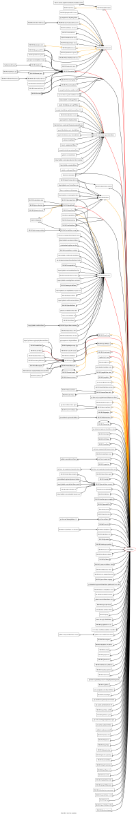
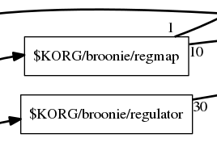

How 4.4's patches got to the mainline
With one exception, the process of pulling patches from one repository to another leaves a sign in the form of a merge commit. Those merge commits stay with their associated patches as they are pulled into subsequent repositories, eventually leaving clues to the pull history in the mainline repository. By working through the history and finding the merge that pulled in each patch, one can work out one plausible path by which each patch got to the mainline. The process takes a while to run and tends to make one's laptop warm up, but it produces interesting results in the end.

The result of running this analysis is the plot shown to the right; click on the image to see the plot in its full, 2.1MB glory.
An aphorism occasionally heard among kernel developers is "design in layers, implement flat." It reflects the learned wisdom that layering is a useful design and abstraction tool, but excessive layering in implementations tends to lead to overhead and poor performance. This plot suggests that the kernel development community itself grew as if it were designed with this same heuristic in mind. The kernel source tree is a multi-layer hierarchy, and the maintainers are theoretically organized in the same way, but, in the end, almost every maintainer pushes patches directly to Linus and, thus, directly into the mainline repository. Most of the time, there are no intermediaries between subsystem maintainers and Linus.
Why are things organized that way? One reason is clearly to minimize the latency built into the system; once changes are committed by a maintainer, they can get to the mainline quickly if need be. This organization breaks pull requests into (mostly) manageable pieces that Linus can look over directly, allowing him to maintain some idea of what is happening in all parts of the kernel. And, importantly, it reflects the fact that Linus feels he can trust a fairly large number of maintainers to not sneak questionable changes into a pull request. He relies heavily on subsystem maintainers to properly review changes from developers, but he does not need higher-level maintainers to review the work the subsystem maintainers are doing.
Clearly, such a system will only work if that trust is maintained. Equally important is the ability for Linus to be able to manage pull requests from that many maintainers. Those who have been watching the kernel community for a long time will remember the frightening process-scalability crises that occurred regularly prior to the introduction of BitKeeper (and the subsequent switch to Git). Over five years ago, when kernel development cycles still ran under 10,000 changes and involved a maximum of 1,200 developers, we asked whether Linus was reaching a scalability limit. At the beginning of 2015, cycles run more quickly, bring in 13,000 changes, and will soon involve 1,600 developers, and there are no real signs of strain.
It is good to know, though, that the process would easily accommodate spreading out the top-level responsibility if need be — should Linus get overwhelmed or simply step aside in favor of somebody else. He has advocated in favor of maintainer groups for subsystems; at some point, perhaps we'll have a maintainer group for the top-level repository as well.
The two trees that feed the most patches to the mainline are interesting in
that they show two different maintainer styles. The most active tree in
4.4 was, as it often is, the staging tree, run by Greg Kroah-Hartman.
2,454 changes went through the staging tree in this cycle, but not
a single
one only 122 of them were merged from another repository;
Greg applied each of the other 2,332 patches
himself. That's 35 patches applied each day over the course of the
entire 70-day development cycle. Like many subsystem maintainers, Greg
would rather see
patches posted to (and applied from) public mailing lists
rather than coming directly from other repositories.
The other tree at the top consists of David Miller's networking trees ("net" and "net-next") which, together, sent 2,276 patches into the mainline. The networking developers use the deepest hierarchy of any kernel subsystem, with a large percentage of the patches moving into David's tree from some other subsystem tree. The style of this group is also to use separate repositories for development ("net-next," for example) and for fixes ("net"), while other subsystems tend to put more things into the same repository, using branches to organize them. Thus, for example, the "tip" repository (with x86 and core-kernel work) and the arm-soc repository (numerous ARM-architecture topics) each generated numerous large pull requests during this development cycle, but each shows as a single tree in this plot. One could separate these streams by looking at the name of the branches pulled from, at the risk of adding a fair amount of noise to the plot.
Attentive readers may have wondered at the use of the term "one plausible path" in the description of the algorithm at the top of this article.

Consider the small piece of the plot shown to the right; it shows a single commit flowing from Mark Brown's "regmap" repository toward net-next. That flow represents this merge commit, wherein David pulled a single change from the regmap repository. When Linus pulled net-next, he will have gotten that change with the rest. But that same commit was also a part of this merge by Linus which brought the rest of the regmap work directly into the mainline repository. At this point, the repository history shows that fix as having come via the latter merge, but the former merge remains in the history as well. More complicated patterns can be found, especially when developers perform "back merges" of a higher-level tree into their own repositories. Such merges are discouraged unless there is a good reason, partly because they tend to obscure the commit history.Doubtless there are other interesting things to be learned by watching how changes make their way through the kernel development community and its repositories. For those who are interested in looking further, the tools used to create this plot can be found in the gitdm repository: git://git.lwn.net/gitdm.git.
[Note that the plots have been updated to fix a mysterious but egregious
error; see the comments for details.]
| Index entries for this article | |
|---|---|
| Kernel | Releases/4.4 |
Posted Jan 6, 2016 18:05 UTC (Wed)
by bnorris (subscriber, #92090)
[Link] (5 responses)
Posted Jan 6, 2016 18:34 UTC (Wed)
by blackwood (guest, #44174)
[Link] (4 responses)
Posted Jan 6, 2016 19:17 UTC (Wed)
by corbet (editor, #1)
[Link] (3 responses)
Posted Jan 6, 2016 20:38 UTC (Wed)
by corbet (editor, #1)
[Link] (1 responses)
The plots have been updated, and there has been a minor tweak to the text as well. The points made in the article still hold, though the structure isn't quite as flat as it appeared before.
Posted Jan 6, 2016 21:11 UTC (Wed)
by blackwood (guest, #44174)
[Link]
Posted Jan 6, 2016 20:43 UTC (Wed)
by blackwood (guest, #44174)
[Link]
Posted Jan 6, 2016 20:52 UTC (Wed)
by bnorris (subscriber, #92090)
[Link] (1 responses)
I also notice that the colons in the protocol specifier are converted to slashes. So we have http/// instead of http://.
Posted Jan 6, 2016 21:30 UTC (Wed)
by corbet (editor, #1)
[Link]
Posted Jan 7, 2016 12:11 UTC (Thu)
by jonquark (guest, #45554)
[Link]
It's still very interesting (and I'm no kernel developer and I may have mis understood).
What about arm-soc?
What about arm-soc?
Sigh, OK, something is clearly wrong there. I guess I'll be trying to figure out how my tool missed those merges now...
What about arm-soc?
So this is downright mysterious. I reran the analysis and got the correct plot; no code changes were involved. Somehow I must have generated a plot from an older run and was in too much of a hurry to notice how wrong it was. That was inexcusably sloppy, and I must apologize.
What about arm-soc?
What about arm-soc?
What about arm-soc?
Multiple entries for the same URL
Yeah, that was one I meant to deal with but somehow didn't...I'd forgotten that people still use http with git. Tweaked and updated, thanks.
Multiple entries for the same URL
How 4.4's patches got to the mainline